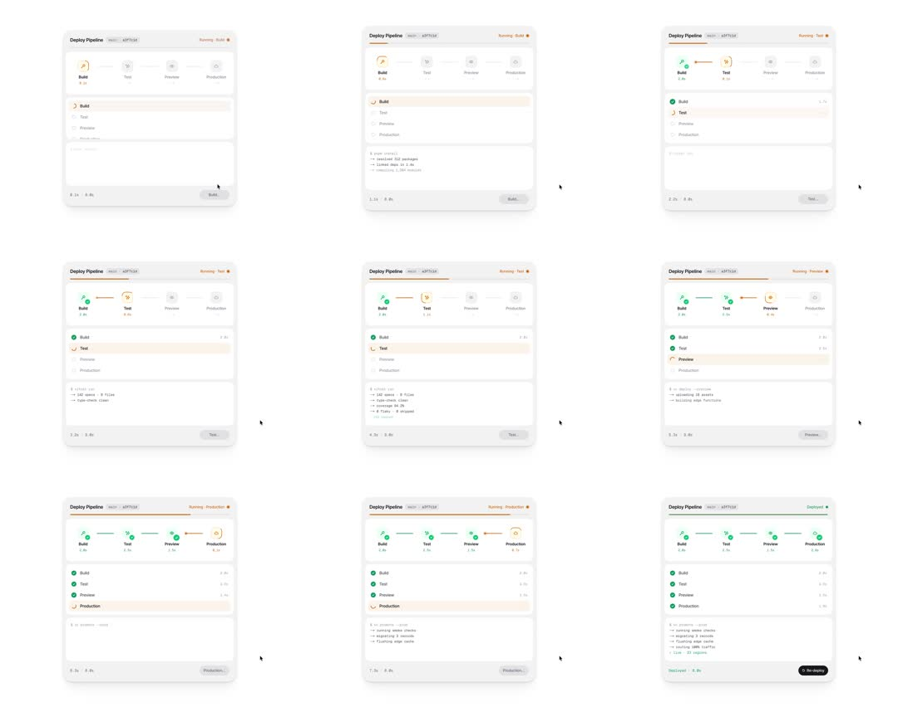

CI/CD deploy pipeline card: a 4-stage stepper (Build/Test/Preview/Production) advances left-to-right - active stage shows a spinner ring and orange highlight, completed stages flip green with checkmarks, the connector line fills behind progress, build logs stream below, ends in a Deployed state with Re-deploy button; loops.
Media
Frame-by-frame

0-12%
Card 'Deploy Pipeline main a3f7c1d', status 'Running: Build'. Build node active (orange, spinning), others grey. Stage list below with Build row highlighted; log lines start streaming.
12-25%
Build completes: node flips green with white check; connector segment Build->Test fills green; Test node activates (orange spinner). Elapsed timer ticking in footer.
25-45%
Test running: log panel shows test output lines appearing one by one; Test row highlighted in list.
45-60%
Test green-checked; Preview activates. Each transition: check draws in with a small pop, next node scales up slightly on activation.
All 4 nodes green; header status flips to 'Deployed' (green dot); footer button morphs from disabled to black 'Re-deploy'; loop restarts.
Build prompt
Rebuild this interaction 1:1: a CI/CD "Deploy Pipeline" card where a 4-stage stepper (Build -> Test -> Preview -> Production) advances left to right on its own, logs stream below, and the card ends in a "Deployed" state with a Re-deploy button. Then it loops.
## Integration
Integration: stack-agnostic spec - springs given as stiffness/damping, timed motions as duration + curve, canvas/shader notes are perf guidance only; map every value to your framework and animation library of choice.
## Scene
White card, radius 16, border black/8, padding 24. Header row: bold title "Deploy Pipeline", mono branch+commit chip ("main a3f7c1d", 11px, grey/50 bg), status pill right ("Running: <stage>" orange dot + text; "Deployed" green). Body: horizontal stepper, 4 circular 40px icon nodes joined by a 2px track (#e4e4e7). Below: stage list (4 rows, icon + name + state), then a log panel (mono 12px, zinc-500, max 6 lines), footer with elapsed timer left and action button right.
## Motion spec
Pattern: autoplay scripted sequence.
- Node states: idle (grey outline, 40% opacity) / active (orange fill, scale 1 -> 1.08 spring stiffness 300 damping 20, spinning conic-gradient ring via background-image rotation, 1s linear infinite) / done (green fill, white SVG check draws in via stroke-dashoffset over 250ms ease-out with a 1.1 -> 1 scale pop).
- Track fill: separate green bar, scaleX 0 -> 1 origin-left, 400ms ease-out, behind the nodes, segment by segment as each stage completes.
- Stage timing: Build 2s, Test 2.5s, Preview 2s, Production 1.5s (full run ~9s).
- Log lines: append one per 300-400ms while a stage runs; each enters opacity 0 -> 1, y 4 -> 0, 200ms ease-out.
- Finish: header pill flips to "Deployed" (crossfade 200ms), footer button morphs from disabled grey to solid black "Re-deploy" (background + text crossfade, 250ms).
- Hold Deployed 1.5s, then reset all nodes to idle (300ms fade) and restart.
## Calibration
- Transitions 200-400ms, all ease-out cubic-bezier(0.22, 1, 0.36, 1); timer counts linearly.
- The check pop and the next-node scale-up are the two moments that make it feel alive - keep them snappy (under 300ms).
- Only the active node's ring spins; idle/done nodes are perfectly still.
## Reduced motion
No spinning rings, no pop. Stage changes fade opacity only, 150ms. Timer and logs still update.
## Don't miss
- The connector fills behind the nodes, not through them.
- Check draws in as a stroke, not a fade-in of the whole icon.
- The Re-deploy button morphs in place; it does not appear elsewhere.
Mechanics
trigger
autoplay scripted run
elements
4 icon nodes on a connector line, per-node progress ring, stage list, log panel, elapsed timer, header status pill, footer action button
properties
node color/scale, ring stroke-dashoffset, connector fill (scaleX), check draw-in, log line append + fade/slide, timer text
timing
each stage 1.5-2.5s; transitions 300ms; whole run ~9s